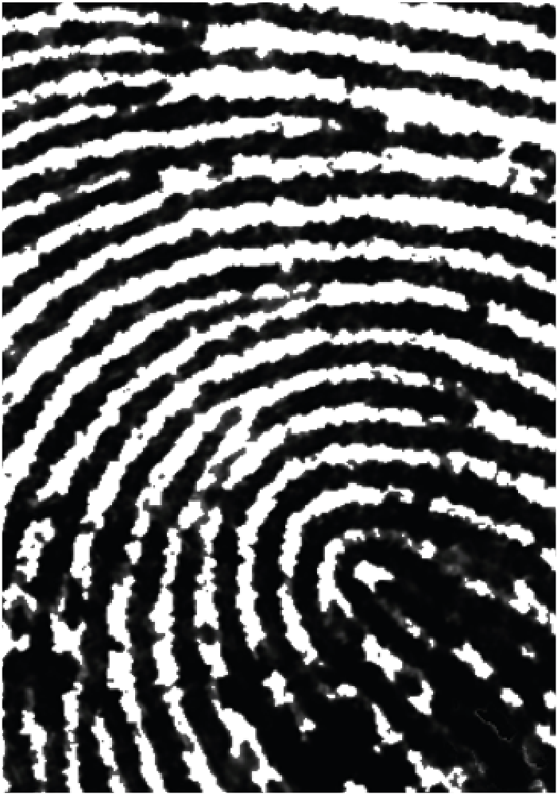

Mark Made

Who is Mark Made?
A creative who specializes in photography and videography. I use mixed media as a way to communicate and share his views to everyone.
Who is Mark Made?
A creative who specializes in photography and videography. I use mixed media as a way to communicate and share his views to everyone.